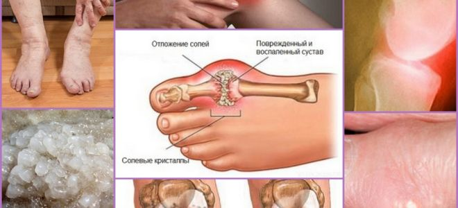
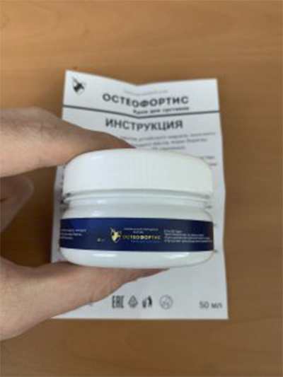
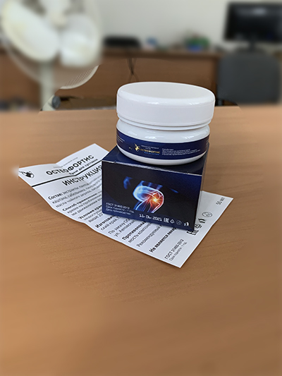
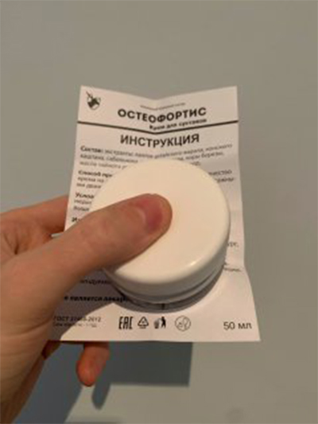

«Российские методы лечения суставов
вызывают лишь недоумение». Известный немецкий ревматолог дал откровенное
интервью российскому изданию
Meduza
Доктор Карл Киршмайер (Karl
Kirschmayer) — заведующий Берлинским центром
ревматологии Tumorzentrum Eva Mayr-Stihl при всемирно известной
Клинике Шарите:
Есть только одна причина заболеваний суставов, но именно её
полностью игнорируют российские врачи.
Доктор Карл Киршмайер: "В России
заболевания суставов до сих пор лечат устаревшими и
малоэффективными препаратами, которые требуют постоянного
применения на протяжении всей жизни. В то время как в Европе
суставы лечатся так же просто, как насморк."
В прошлом году Карл Киршмайер приезжал в
Россию для изучения опыта своих российских коллег. То, что он увидел
в России, по его словам, не поддается объяснению. В нашей стране, по
утверждениям Карла, ревматология застряла в середине прошлого века.
После громких выступлений в Германии доктор
Карл Киршмайер согласился дать интервью российскому изданию. Что
известному врачу не понравилось в российской медицине? И почему он
утверждает, что ГРАЖДАНЕ РОССИИ с больными суставами никогда не
смогут стать здоровыми?
- Выступая перед немецкими журналистами, вы
сказали, что увиденное в России повергло вас в шок. Не могли бы
вы прокомментировать это?
- Хочу сразу сказать, что я хорошо отношусь к
России, к российской культуре и к российским гражданам. Но то, в
каком состоянии у вас находится медицина, действительно вызывает шок
у европейских врачей. У вас медицина отстает как минимум на 20, а
может и на все 30 лет. Во всяком случае, в лечении заболеваний
суставов и опорно-двигательного аппарата. Можно сказать что такой
науки как Ревматология в России не существует.
Смотрите, чем врачи предлагают лечить суставы
в России: Випросал, Долгит, Вольтарен\Фастум гели, Диклофенак,
Терафлекс, Нурофен и другими подобными препаратами.
Однако эти препараты НЕ ЛЕЧАТ СУСТАВЫ и ХРЯЩИ,
они лишь снимают симптомы заболевания - боль, воспаление, отёчность.
Теперь представьте, что происходит на уровне организма. Когда
человек принимает таблетку, наносит анестетическую мазь или делает
инъекцию, боль проходит. Но как только средство перестает
действовать - боль моментально возвращается.
А боль это важный сигнал, она сигнализирует,
что в суставе идёт патологический процесс. Просто заглушая боль,
поражённые суставы подвергаются ещё большему разрушительному
воздействию. Процесс разрушения ускоряется в 3-5 раз и в конечном
счёте приводит к необратимым изменениям, к полному обездвиживанию и
инвалидности.
Такой способ борьбы с болью в суставах в
Европе не применяется уже больше 20 лет. Средства от боли
используются только в крайних случаях, очень точечно и аккуратно. В
Германии они продаются только по рецептам и под строгим контролем.
Так называемые «хондропротекторы» запрещены
полностью, как абсолютно мошеннические и бесполезные препараты.
Ваши врачи и фармацевты просто калечат людей!
Понятно, что постоянно продавать по высоким ценам средства для
устранения симптомов намного выгоднее, чем раз и навсегда вылечить
заболевание, восстановить разрушающийся сустав, но так же нельзя!
- А как в Германии обстоят дела с лечением
суставов?
- Все немецкие врачи, от
профессоров-ревматологов до рядовых терапевтов и фельдшеров, уже
давно поняли что нужно устранять не последствия заболевания, а его
причины. Это залог полного, быстрого и безопасного излечения. А
какова основная причина поражения суставов? Это отложение орто-солей
из-за нарушения кровообращения и циркуляции синовиальной жидкости.
Ураты – истинные соли мочевой кислоты, причина
развития подагры.
Остеофиты – кальцинированные соли, являются
причиной остальных 97% заболеваний суставов и позвоночника. Все виды
артрита и артроза, остеохондроз, остеопороз, ревматизм, бурсит и
даже гигрома. Все эти заболевания имеют одну причину – отложения
остеофитов.
Соли, откладываясь на поверхностях сустава,
словно наждачная бумага точат окружающие ткани - кости и хрящи.
Разрастаясь, кристаллы орто-солей начинают травмировать мышечную
ткань, сухожилия, сосуды и капилляры. Вызывая этим воспаления,
заражения, отёки и тяжёлые боли.
В запущенных случаях, крупные скопления
орто-солей запросто могут отколоть часть кости, при резком движении,
вызвав тем самым полную недееспособность и навсегда обездвижив
сустав.
Очень опасное заблуждение, что кальций для
суставов полезен. Да, кальций полезен, но полезен он только для
ЗДОРОВЫХ суставов. Когда суставы уже болят или
хрустят,
значит в них уже образовался слой остеофитов, а кальций, помимо
укрепления костной ткани, также укрепляет и соли-остеофиты,
усугубляя и ускоряя их разрастание.
Поэтому немецкие ревматологи в первую очередь
восстанавливают кровообращение в больном суставе, чтобы орто-соли,
накопленные годами, выводились из него. Это, в свою очередь,
восстанавливает нормальную циркуляцию синовиальной жидкости и
запускает процесс восстановления тканей сустава.

«Наросты» орто-солей на поверхностях
сустава – первопричина всех патологий
На самом деле суставы человека очень
регенеративны, они самостоятельно умеют восстанавливаться, словно
хвост ящерицы. Нужно только немного помочь им в этом - освободить от
"налипших" на них орто-солей и процесс пойдёт самостоятельно.
Еще в 90-х годах прошлого столетия Швейцарским
ученым удалось получить особую форму квази-витамина B, так
называемый альфа-артроферол. Он получается путём синтеза натуральных
ингредиентов: Пихтового масла, пант, красного корня плюс набор из
более чем 50-ти различных экстрактов.
Это вещество способно проникать внутрь молекул
орто-солей и разрывать их изнутри – в результате очищаются
поверхности суставов, восстанавливается кровоток и циркуляция
синовиальной жидкости. НАВСЕГДА! А точнее до того момента, пока соли
не накопятся снова (но для этого потребуется несколько десятков
лет). Больше НЕ НАДО ПОСТОЯННО использовать препараты для избавления
от боли и воспаления. Не надо опасаться, что однажды сустав
"заклинит" навсегда, полностью лишившись подвижности и потребуется
протезирование. Люди становятся полностью здоровыми на десятки лет.
Я когда увидел российскую медицинскую
статистику, у меня волосы встали дыбом. Вы знаете, какая в России
самая частая причина инвалидности? Это ни рак, ни СПИД, ни диабет, а
артроз! Простейший Артроз, который в Германии лечится за 2-3 недели
не самым дорогим препаратом, в России приводит к инвалидности!
В Германии сегодня заболевания суставов не
считаются опасным патологиями, если, конечно, речь не идёт о сильных
травматических повреждениях: переломах, дроблении, разрывах и т.п.
Боль и воспаления в суставах говорят лишь о том, что они
"загрязнены" солями и их пора бы почистить. После курса 2-3
недельной "чистки", суставы приходят в норму и о проблемах можно
забыть на ближайшее десятилетие.
Заболевания суставов, которые в России
пытаются "лечить" по отдельности, в Европе уже давно объединены в
одно заболевание «Articulatio de sales» (Солевые образования
суставов). Это заболевание включает в себя:
Подагру
Артрит
Артроз
Остеохондроз
Ревматизм
Остеопороз
Бурсит
Синовит
Гигрому
Это очень краткий список, но остальные
заболевания являются лишь подвидом этих основных девяти патологий.
Например, коксартроз это подвид артроза и т.п.
И весь этот длинный список болячек исцеляется
очень просто, банальной чисткой суставов. Абсолютно безопасной,
которая не требует даже врачебной помощи и проводится в домашних
условиях.
- Как "чистят" суставы в Германии?
- Сегодня имеются специальные препараты,
которые предназначены для очистки суставов от соляных отложений. Они
содержат альфа-артроферол. Например, очень хорошим средством
является крем Остеофортис. В ней содержится альфа-артроферол в
особой,
легко усвояемой форме, за счет чего она обладает повышенной
эффективностью.
Также важным преимуществом именно Остеофортиса
является то, что он содержит комплекс системных артро-витаминов,
макро- и микроэлементов, предназначенных для улучшения работы тканей
сустава. То есть он оказывает всестороннее оздоровляющее действие на
костную и хрящевую ткани, синовиальную жидкость, мышечные волокна,
на ткани связок и сухожилий. Весь возможный спектр комплексного
воздействия.
В состав Остеофортиса входит более 50
компонентов.
Не буду перечислять их все, перечислю лишь основные:
Биогенный прополис
Укрепляет и тонизирует
хрящевую ткань, повышает её эластичность,
увеличивает сопротивляемость к истиранию
Сабельник болотный
Нормализует проницаемость
мелких капилляров
Пихтовое масло
(микро-молекулы)
Снимает воспаление и
заражение тканей сустава, останавливает процессы
гниения
Альфа-артроферол
Уничтожает отложения
орто-солей, размягчает их и разлагает на
выводимые элемент
Красный корень
Расширяет сосуды,
улучшает приток крови в области сустава
Клетки пант марала
Ускоряют регенерационные
процессы в тканях сустава
Кора березы
(альфа-элементы)
Нормализует циркуляцию
синовиальной жидкости
- Остеофортис, на сколько нам известно, не
продается в аптеках России?
- В том то и дело, что нет. России врачи
предпочитают «скармливать» населению анестетики и хондропротекторы
тоннами, нежели заниматься настоящим лечением.
При этом вне всякого сомнения, России
ревматологи, по крайней мере те из них, которые интересуются
прогрессивными методами лечения, знают о Остеофортисе и его
восстановительных способностях. Но не рискуют назначать препарат, не
входящий в список Минздрава.
Насколько я знаю, производитель Остеофортиса
хотел
выйти на рынок России. Но ему не дали это сделать, придумав
сотни преград (бюрократия в России неискоренима). Оно и понятно
– если этот препарат появится в аптеках, то аптечная мафия понесет
колоссальные убытки. Ведь фармакология сегодня это бизнес! Даже в
Европе. Но в Европе бизнес подконтролен государству, а что
происходит в России я не берусь судить, вам наверняка виднее.
- Что бы вы посоветовали людям с больными
суставами, живущим в России?
- Простые люди, особенно люди после 50-ти,
страдают от отсталости медицины России больше всего. Это не их
вина, просто так устроена система здравоохранения.
Но к счастью – выход есть. Мы договорились с
НМИЦ Ревматологии России о возможности бесплатной раздачи
препарата всем гражданам, имеющим проблемы с суставами, через
специальный розыгрыш. Сотрудники НМИЦ создали центр распределения, а
мы предоставили необходимую партию препарата. Поэтому сейчас любой
житель России может попытать удачу и получить Остеофортис со скидкой
до 100%, с доставкой почтой или курьером.
Где я могу купить Остеофортис?
К сожалению, его пока нельзя купить в аптеках.
Они продают только продукцию Big Pharma, которая в лучшем случае
просто не помогает, не говоря уже о серьезных побочных проблемах у
пациентов.
Спасибо. Очень полезно!
Заказала Остеофортис пока такая акция! Консультант сказал, что еще
есть,
но быстро заканчивается. Удачно попала на эту новость и купила за
полцены
Семен Тихонов / Волгоград
Я один из тех, кто уже успел
попробовать крем на себе. Он действительно самый лучший что я видел.
И я артрозник со стажем – уже 7 лет мучает меня эта болезнь. Уже был
готов принимать таблетки и колоться всю жизнь, но в итоге после
курса Остеофортиса боль ушла. Совсем ушла. Рекомендую его всем – он
поможет!
Геннадий Антонов /
Санкт-Петербург
Мне 63 года. Колени болят с 53
лет. В последнее время боль стала совсем невыносимой. Знакомый врач
(друг детства) рассказал про эту программу и посоветовал выписать
средство 3 месяца назад. Сейчас скачу, как горный... Хотя нет, так
не надо) Просто скачу в общем! Крем невероятный!

Наталья Габонова /
не указан
Оставила заявку по акции.
Обещали, что через 5 дней смогу получить на почте. Очень надеюсь.
Анна Кузнецова / Москва
Главная цель у врачей по моему
содрать с нас как можно денег больше их ничего не интересует. Каждые
пол года прокалывалась. В этом году осенью такого поназначала, что я
побоялась колоться. Ведь даже не заглянула, какие у меня еще болезни
и как это отразится на организме. Полнейшее равнодушие и назначение
тех препаратов, за которые они получают от фирм. Может в других
местах не так, но не уверена. Такая у нас медицина. А про бесплатный
европейский препарат хорошая новость!
Кирилл Максимов / Мурманск
Да в нашей стране можно только
умирать. Мне 59 лет. Уже две трети сверстников умерли, остальные еле
двигаются из-за вечных болей в ногах-руках-спинах... Стоит
задуматься
Илья Свиридов / Брянск
Крем действительно
невообразимый по эффекту. Мазал им еще прошлым летом (сын привез из
Европы) все себе. Подагра прошла! Колено перестало болеть! До сих
пор никаких симптомов нет. Сам удивлен. Чувствую себя на 5+.
Рекомендую попробовать всем. Тем более если сейчас бесплатно дают
ничего ведь не теряете!

Алиса / Санкт-Петербург
Тоже знаем крем Остеофортис не
по
наслышке и он нам тоже помог очень. Постоянно была на уколах, а
после Остеофортисика уже второй месяц летаю!

Светлана / Тверь
И мне понравился крем. Я
сначала сидела на этодолаке, потом на мелоксикаме + кетороле. Но
потом вдруг они перестали действовать. Тогда пошла к врачу, и он мне
посоветовал попробовать крем Остеофортис (врач молодой был,
наверное,
еще верит, что медицина должна быть для людей, а не для выкачивания
денег!). Остеофортис мне помог с чуть ли не с первого раза – боль
почти
сразу прошла, но стала мазать курсом как советовал врач. Через 3
недели забыла, что вообще болело что то у меня. Чувствую себя как в
молодости!
Денис Григорьев / Екатеринбург
Сосед по даче, ему 72 года,
раньше часто жаловался на поясницу. Но в последний месяц вижу его
активным и жизнерадостным. Рассказал, что мазал Остеофортисом, внук
ему
привёз откуда-то.
Алена Капустина / Санкт-Петербург
Пока читала на Немецких форумах
отзывы немцев о Остеофортисе, а он прям на глазах заканчивается!
Слава богу успела заказать по скидке
 Геннадий Антонов /
Санкт-Петербург
Геннадий Антонов /
Санкт-Петербург Анна Кузнецова / Москва
Анна Кузнецова / Москва

Комментарии: